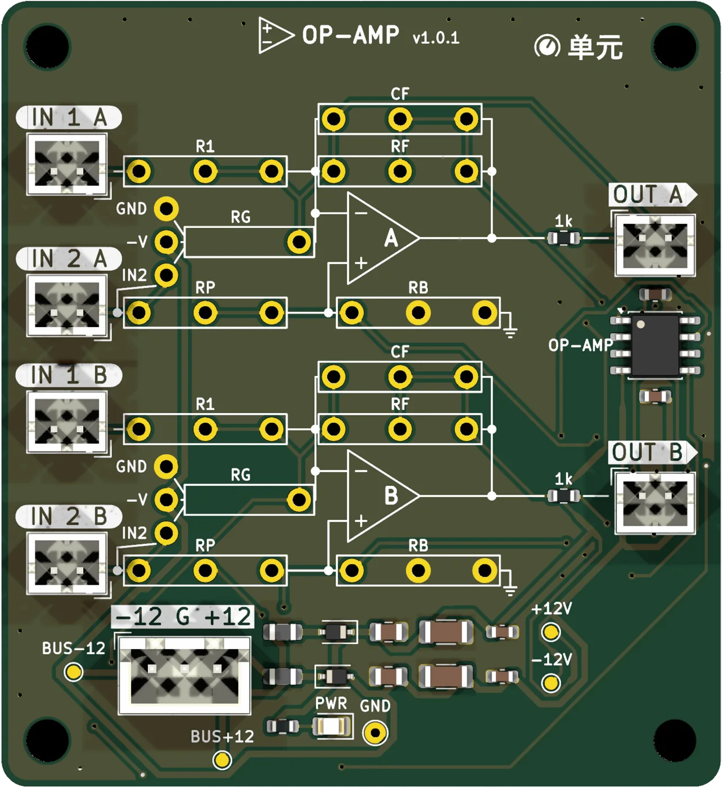
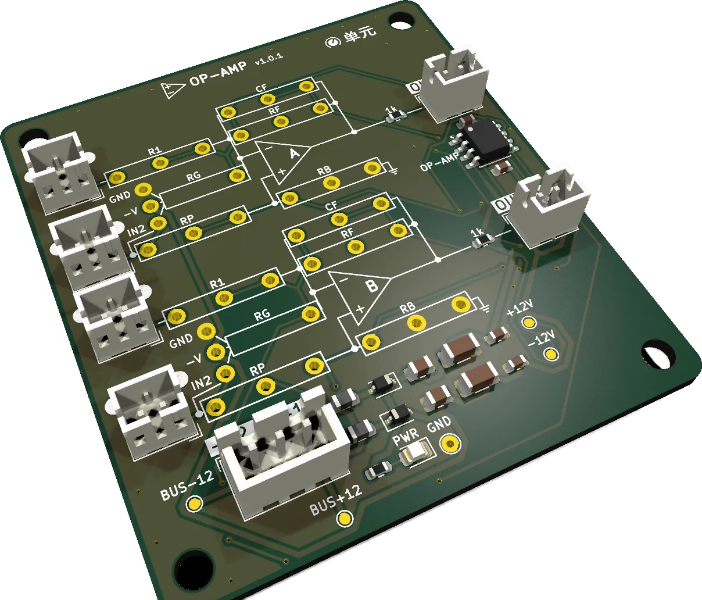
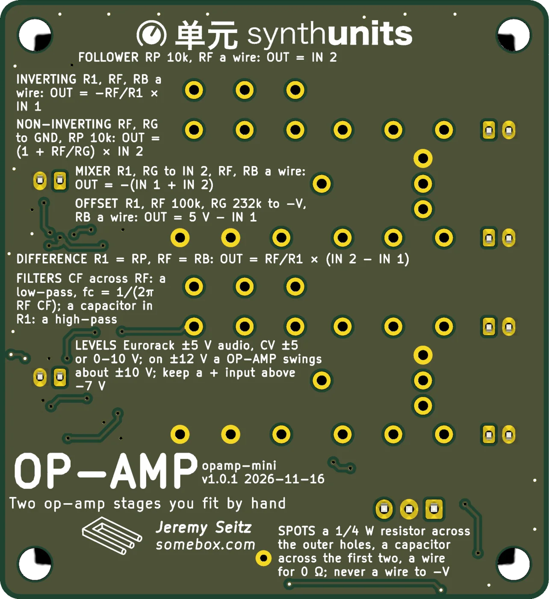
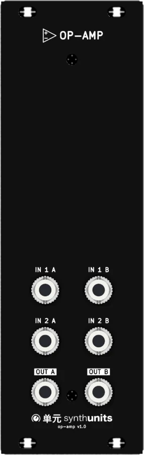
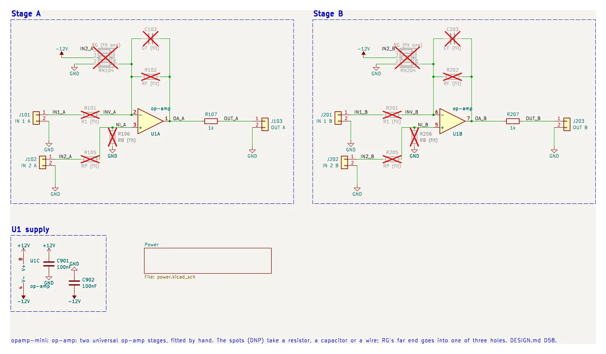

Op-amp minimodule: two stages to build on
Two op-amp stages you finish yourself with resistors, capacitors and wires: a follower, an amplifier, a mixer, an offset or a filter.
A small board with one dual op-amp, its two halves as two identical stages, A above B. Each stage is printed on the board as its own schematic, read from its inputs on the left to its output on the right. Six spots in each stage take a resistor, a capacitor or a wire, and what you fit decides what the stage becomes: a follower, an inverting or non-inverting amplifier, a two-input mixer, an offset and scale stage, a difference amplifier, a low-pass or high-pass filter, or an integrator.
Each spot is three holes in a row: a 1/4 W resistor goes across the outer two, a capacitor with 5 mm leads across the first two, a wire across either. With turned-pin sockets in the holes, values can be swapped without soldering. One spot, RG, has a choice of three holes for its far end: ground sets a non-inverting gain, the negative rail makes an offset, and the second input turns the stage into a mixer. The back of the board is a short cheat sheet: the patterns, what to fit, the levels.
I made it to try op-amp circuits in a real case and patch them into the rest of the synth. The jacks are on JST PH connectors and the power comes on a JST XH lead, as on every minimodule, so it sits on the printed sled behind an 8 HP panel, or in any project box. It is a cut-down version of the larger op-amp lab board, and it took that board's place in the first order. I haven't built it yet.
- Status
- Being made
- Version
- v1.0.1 (2026-11-16)
- Board
- 55 × 60 mm, 2 layers
- First order
- 10 boards, 10 assembled by the fab
- Rough price
- about $10–15 (how)




What it does
- One dual JFET-input op-amp, the kind most synth schematics use, as two identical stages.
- Six spots a stage: R1 and RG into the − input, RF and CF in the feedback, RP and RB at the + input.
- A 1 kΩ output resistor on each stage, fitted at the factory, so a patched short doesn't harm the op-amp.
- Designed for a swing of about ±10 V into 10 kΩ on the board's ±11.7 V rails (about ±8.6 V is what the datasheet guarantees).
- Two inputs and one output a stage: six jack connections in all.
- Power: ±12 V on a 3-pin JST XH, through a ferrite and a series Schottky diode on each rail, with a dim green power LED.
- Low-pass example: RF 100 kΩ with CF 1 nF gives a corner at about 1.6 kHz.
- 55 × 60 mm, two layers, an M3 hole in each corner.
- The surface-mount parts are fitted at the factory; the spots, sockets and connectors by hand.
Wiring and setup
- Each input and output is a 2-pin JST PH connector (1 tip, 2 GND): a straight lead to a jack breakout, or to a Thonkiconn on the panel.
- Power from one of the power hub's outputs on a straight-through 3-pin JST XH lead (1 −12 V, 2 GND, 3 +12 V).
- Follower: RP 10 kΩ, RB 1 MΩ and a wire in RF. Inverting: R1 and RF, a wire in RB. Non-inverting: RF, RG to ground, RP 10 kΩ and RB 1 MΩ.
- Mixer: R1, RG to IN 2 and RF, all 100 kΩ, a wire in RB; stage B can invert the sum back.
- Offset and scale: R1 and RF 100 kΩ, RG 232 kΩ to −V, a wire in RB. ±5 V in gives 0 to 10 V out.
- Difference amplifier: R1 equal to RP and RF equal to RB, for a balanced line input.
- Only ever a resistor from RG to −V: a wire there ties the − input to the negative rail.
- A stage you don't use gets wires in RF and RB, so its output rests at 0 V.
- It mounts on the printed sled behind its own 8 HP panel or the universal panel, one stage to a column of jacks.
Limits and open questions
- Not built or measured yet. The figures come from the datasheet and from calculation.
- Keep the + input above about −7 V: the op-amp's input range ends about 4 V inside the negative rail. That matters in the follower, non-inverting and difference patterns; an inverting stage takes anything.
- Eurorack audio and CV (±5 V, 0 to 10 V) are inside that range. A ±10 V LFO or envelope wants an inverting stage.
- Use 10 kΩ in RP rather than a wire, so a jack patched in while the case is off can't drive the input's protection diodes.
- With nothing patched into IN 2, a follower or non-inverting stage floats unless RB is fitted (1 MΩ).
- The integrator's output can sit off centre: up to about 0.1 V with RF at 1 MΩ, about 1 V at 10 MΩ.
- A review before the order found no wiring, pinout or polarity errors. It corrected some of the texts on the board, and this version carries the corrections.
Development notes
- It started as the op-amp lab board, a 100 × 100 mm learning board. I wanted something smaller that fits in a case, so the stages went from nine spots to six and the jacks moved onto JST leads.
- The stage is the textbook op-amp arrangement, laid out the way op-amp evaluation boards do it. Letting RG's far end pick ground, −V or the second input is how one spot does the work of three.
- I looked at a newer version of the op-amp with a wider input range and no phase reversal, but kept the classic part for this first run.
Schematic
The schematic as drawn, with each chip named by its function rather than its part number. The design isn't open source yet, so there are no files to download.



Would you use a OP-AMP? A thumbs-up on its tracking issue is how I count interest, and you can subscribe there to follow its bring-up. Questions and ideas go to the discussions.